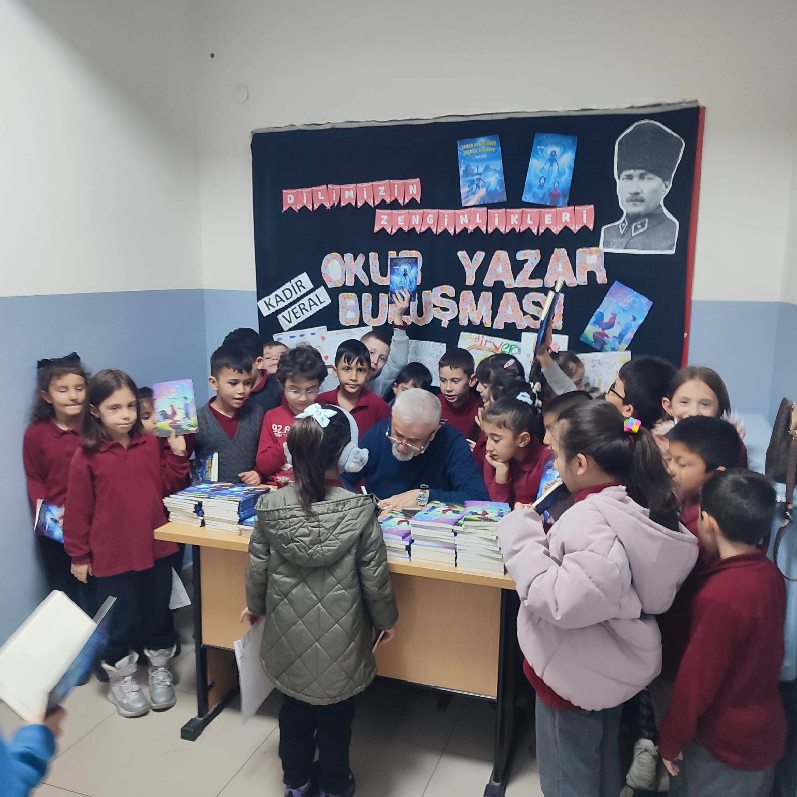

Öne Çıkan
Mustafa Tunç İlk/Ortaokulu’nda Okur Buluşması
Mustafa Tunç İlk ve Ortaokulu’nda düzenlenen buluşmada öğrencilerle birlikte hayal gücünün gücünü, kitapların açtığı kapıları ve yazarlık serüveninin perde arkasını konuştuk. Soru-cevap bölümüyle çocukların merak ettiklerine içtenlikle yanıt verdik; imza köşesinde ise kitaplarla birlikte hatıra fotoğrafları çektik.